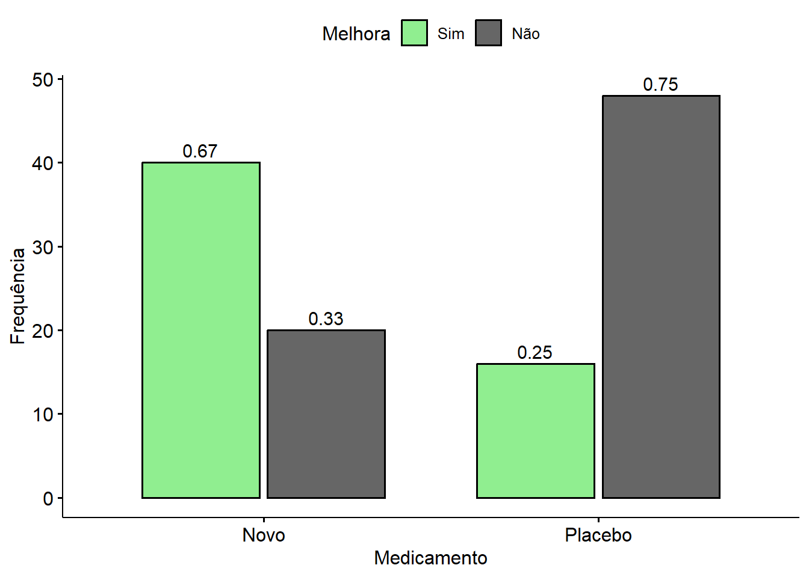

Teste Qui-quadrado
O teste Qui-quadrado (\(\chi^2\)) é um método da estatística utilizado para responder os seguintes tipos de pergunta.
Existe Associação entre 2 variáveis categóricas?
As frequências observadas em 1 variável categórica são iguais as frequências teóricas esperadas?
Variaveis categóricas são aquelas que representam qualidades, categorias, grupos ou classificações, podendo ou não ter uma ordem. Alguns exemplos: gênero (Homem, Mulher, …), grau de instrução (Fundamental, Médio, Superior,…), presença de doença (Sim, Não).
O teste trabalha comparando as frequências observadas, que são os dados reais coletados, com as frequências esperadas, que são as frequências estimadas sob a hipótese nula.
O teste calcula uma medida do quão distante as frequências observadas estão das frequências esperadas. Essa diferença é traduzida em um valor de \(\chi^2\), que indica o desvio entre os dados e o esperado.
Se a diferença entre as frequências observadas e esperadas for muito grande, isso pode significar que existe associação entre as variáveis (no caso da análise de associação) ou que as proporções observadas das categorias não seguem as proporções esperadas (no caso do teste de aderência).
Para ilustrar esse método, suponha um estudo de ensaio clinico aleatorizado realizado para avaliar um novo medicamento.
Melhora
|
Total | ||
|---|---|---|---|
| Sim | Não | ||
| Medicamento | |||
| Novo | 40 | 20 | 60 |
| Placebo | 16 | 48 | 64 |
| Total | 56 | 68 | 124 |
Dependendo do tipo de experimento ou investigação que está sendo realizado, a formulação estatística das hipóteses pode variar mas no geral a aplicação do teste qui-quadrado é a mesma para todos os estudos envolvendo duas variáveis categóricas.
Para esse exemplo em especifico podemos estabelecer as seguintes hipóteses
\(H_0\): Prob(Melhora no grupo do medicamento NOVO) \(=\) Prob(melhora no grupo que tomou o PLACEBO)
\(H_1\): Prob(Melhora no grupo do medicamento NOVO) \(\neq\) Prob(melhora no grupo que tomou o PLACEBO)
’
| n | statistic | p | df | method | p.signif |
|---|---|---|---|---|---|
| 124 | 21.70868 | 3.17e-06 | 1 | Chi-square test | **** |
| x | y | observed | prop | row.prop | col.prop | expected | resid | std.resid | chi | chi_pdr |
|---|---|---|---|---|---|---|---|---|---|---|
| Novo | Sim | 40.00 | 0.32 | 0.67 | 0.71 | 27.10 | 2.48 | 4.66 | 6.14 | 1.12 |
| Placebo | Sim | 16.00 | 0.13 | 0.25 | 0.29 | 28.90 | −2.40 | −4.66 | 5.76 | 0.52 |
| Novo | Não | 20.00 | 0.16 | 0.33 | 0.29 | 32.90 | −2.25 | −4.66 | 5.06 | −0.57 |
| Placebo | Não | 48.00 | 0.39 | 0.75 | 0.71 | 35.10 | 2.18 | 4.66 | 4.74 | −1.07 |
A partir do resultado do teste Qui-quadrado de independência podemos rejeitar a hipótese nula de que que não há associação entre melhora e tipo de medicamento ( \(Q_p=21,7;p<0,0001\) ), o que nos permite afirmar que, para este ensaio, a incidencia de melhora positiva foi maior no grupo que tomou o novo medicamento em comparação com o grupo controle que tomou o placebo.
O teste qui-quadrado apenas testa se existe associação, mas não é capaz de indicar como é essa associação. Para isso é necessário calcular uma Medida de Associação, tema que será melhor explorado em outro momento.